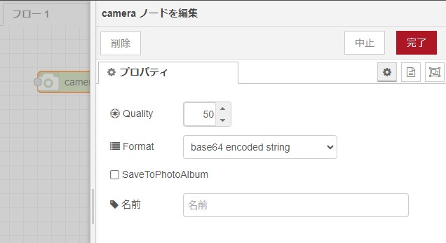
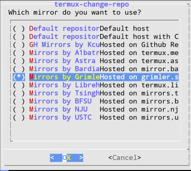
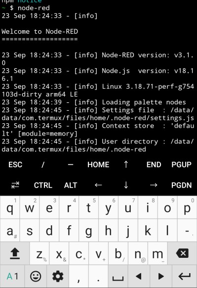
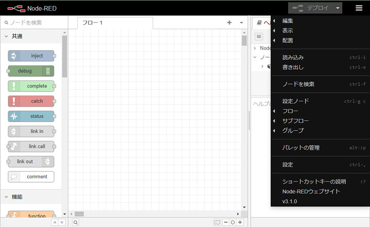
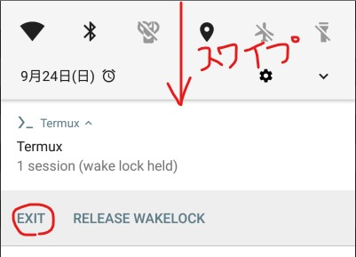

Android OSのスマ－トフォンでNode-REDサーバーを使うには、いくつか方法があります。
- ターミナルアプリケーション Termux上に構築する
- RedMobile Lite（無料）
- RedMobile（500円）
一番簡単に構築できるのは、「RedMobile」系です。しかし、新規モジュールを追加できない事が弱点です。
「RedMobile Lite」では「base64」や「image」などが入っていないのです。Liteにおいてはモジュールを追加できないのは致命的です。
「RedMobile」は有料ですが、上記「base64」や「image」だけでなく、カメラ、ストレージ、位置情報なども扱うことが可能です。中にはRedMobileオリジナルなモジュールもあるので、Termuxでは構築できないモジュールもあります。
「カメラ」モジュールは本当に秀逸です。「500円で楽したい！」と個人的には思ってしまいます。

しかし、有料版でも「新規モジュールを追加できない」／「Node-REDのバージョンを上げることができない」という弱点は残っています。ちなみに、2023年10月において、Node-RED v3.0.2でした。
Termuxは端末エミュレーションです。pkgコマンドを使って様々なパッケージをインストールすることが可能です。TermuxにNode.jsをインストールし、npm installでNode-REDをインストールするのです。
弱点は、インストール～構築までが非常に面倒なところです。以下の手順でNode-REDを構築することができるようになりましたが、かなり試行錯誤しました。
以下に手順を説明します。
手順の概要
- F-Droidのインストール
- Termuxのインストール
- 様々なパッケージのインストール
最新のTermuxはGooglePlayからインストールすることができません。F-Droidからインストールします。OSS版のGooglePlayです。
F-DroidはAndroidに対応したソフトウェアリポジトリおよびアプリケーションストアである。Google Playと機能は類似するが、扱っているのはフリーかつオープンソースのソフトウェアのみである。
フリー百科事典『ウィキペディア（Wikipedia）』
F-Droidのインストールは、スマホの機種によって異なるので、おおざっぱに説明します。本記事での本命は2以降です。
F-Droidのインストール
まず、「f-droid.org」にアクセスします。
トップページにQRがあるので、これを読み取ると、FDroid.apkをダウンロードできます。
ダウンロードしたら、インストールしてください。
ただし、途中で「提供元不明のアプリ」云々と言われたら、促されるままに「設定」をタップして「提供元不明のアプリをインストールする」をONにしてください。
F-Droidを開くと、データベースの更新をします。しばらくお待ちください。
Termuxのインストール
F-Droidの右下の虫眼鏡マークをクリックして、「termux」を入れて検索してください。
「Termux Terminal」をインストールしてください。
「Termuxをダウンロード中」と表示されますので、しばらくお待ちください。
「セキュリティー上の理由から～インストールすることはできません」と言われたら、促されるままに「設定」をタップして「この提供元のアプリを許可」をONにしてください。
「Termux」をインストールしてください。
パッケージのインストール
Termuxを起動します。以下のコマンドを順番に実行します。
ストレージを使えるようにします。
$ termux-setup-storage
パッケージをダウンロードする場所を選択します。
$ termux-change-repo「Grimler's mirrors」を選択して「OK」です。2023年10月においてはこちらで正常にインストールできました。

npmする際にビルドするので準備します。（[空白]-ｙをつければ問い合わせにYで答えてくれます）
$ pkg update
$ pkg upgrade
$ pkg install build-essential
$ pkg install binutils
$ pkg install python
$ pkg install git
後々必要になるので、「以下のインストール」と「起動時に読み込む設定ファイルの追加」をしておきます
$ pkg install nano coreutils
$ touch .bashrc
$ touch .bash_profile
Node-REDはNode.js上で動きます。インストールします。
$ pkg install nodejs-ltsここまで正常にインストールすれば、あともう一歩。
$ npm install -g --unsafe-perm node-redNode-REDを起動してみましょう。
$ node-red
スマホ上のNode-REDエディタを使う時は、スマホ上からアクセスすると画面が小さすぎるので、他のPCからアクセスして編集します。

2023年10月において、v3.1.0です。
終了の方法
CTRL + Cで、Node-REDは終了します。
Termuxを終了するのは、スマホの上部を上から下にスワイプし、Termuxの「Exit」をタップしてください。
